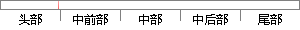

。1947年12月16日，威廉·邵克雷(William Shockley)、约翰·巴顿（John Bardeen)和沃特·布拉顿（Walter Brattain）
片段位置图

相似结果
相似片段：
管。另外，所选光敏三极管的光谱响应范围必须与入射光的光谱牧场生相互匹配，以获得最佳的响应特性。[1] 晶体管发展的重要里程碑编辑本段回目录 1947年12月16日：威廉·邵克雷(William Shockley)、约翰·巴顿(John Bardeen)和沃特·布拉顿(Walter Brattain)成功地在贝尔实验室制造出第一个晶体管。 1950年：威廉·邵克雷开发出双极晶体管(Bipolar Junction Transistor)，这是现在通行的标准的晶体管。 1953年：第
| 对比库： | WriteCheck云资源库 |
| 来源： | baike.solarf.net 查看来源 |
| 发布时间： | 2012-09-18 |
| 相似率 | 32.2% （轻度抄袭） |